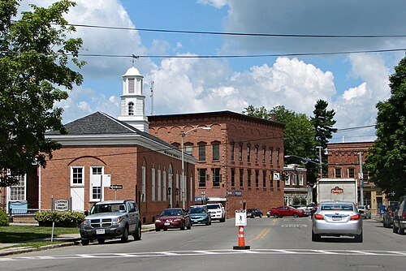

About the town
Canton is the county seat of St. Lawrence County, a college town, and a little town that sits pretty high up north. In this town you're very likely to find a monthly farmer's market, various buildings ranging from post offices, lirbraries, movie theaters, and restaraunts. It's the kind of place where hospitality, friendship and welcomeness are commonplace, and, for its size, there can be quite the bustle, here.
Named orignally after the capital of Guangdong, China, which is now called Guangzhou, Canton was settled in 1801 but officially founded in 1805 as "New Cairo." Of course, the name changed to Canton in 1807. Both St. Lawrence University and SUNY Canton were founded here, and as the town modernized, it cemented itself as the county seat and a college town because of its size. The post office is on the National Register of Historic Places
Attractions

- A1 Oriental Kitchen
- Sergi's Italian Restaraunt
- Brewer Bookstore
- American Theatre
- Canton Public Library
- Appleton Arena
Facts about the town
| Population (as of 2020) | Coordinates | Zip Code | Notable people |
|---|---|---|---|
| 11,638 | 44°35′51″N 75°10′16″W | 13617 | Frederic Remington, George R. Malby, Silas Wright |
Top Sights
- Heritage Park Trail
- TAUNY Center
- Village Park
- Willow Island Sculpture Garden